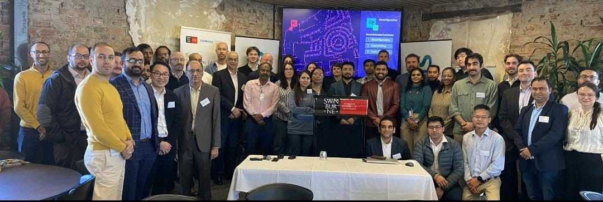

Experience
A national science agency, a global engineering company and three universities across two countries. Research that has been tested in the real world, not only on paper.

Work
- Nov 2025 – Jul 2026
Research Fellow
CSIRO, MelbournePart of a national research program on restarting the grid after blackouts. Tested how solar and battery inverters can do the job that big coal and gas generators do today.
- Aug 2025 – now
Sessional Lecturer
Swinburne University of TechnologyTeach smart power grid design to undergraduate and postgraduate students. Wrote course materials, lab exercises and assessments.
- Jul 2025 – now
Research Assistant
Swinburne University of TechnologySupport research on electric car charging, local energy trading and smart grid planning.
- Feb – May 2025
Grid Connection Engineer
Siemens, Siemens–Swinburne Energy Transition HubRan the studies needed to connect a 250 MW battery to the South Australian grid. Wrote Python tools that check results against the grid's rules automatically.
- Apr 2024 – now
PhD Candidate
Swinburne University of TechnologyElectric cars and peer-to-peer energy sharing. Fully funded by the Siemens–Swinburne Energy Transition Hub.
- Apr 2023 – Mar 2024
Associate Researcher
Federation University Australia, Centre of Smart AnalyticsBuilt a benchmark model for scheduling electric haul trucks in open-pit mines.
- Jan 2021 – Mar 2023
Research Associate
Aligarh Muslim University, IndiaDesigned and tested hardware that measures and controls power in small grids. Funded by the Government of India. Led to two journal papers and a patent.
- Oct 2021 – May 2022
MATLAB Trainer
Arena Multimedia, AligarhTrained more than 120 engineering students in MATLAB and Simulink.
- Feb 2019 – May 2020
Teaching Assistant
Aligarh Muslim University, IndiaRan electrical engineering labs for classes of up to 120 students.
Education
- 2024 – 2027
PhD, Electrical Engineering
Swinburne University of Technology, Melbourne - 2018 – 2020
Master of Technology, Instrumentation and Control
Aligarh Muslim University, IndiaThesis on a new sensor for controlling voltage-support equipment. Funded by a national GATE scholarship.
- 2013 – 2017
Bachelor of Technology, Electrical Engineering
Aligarh Muslim University, India
Training
- PSS®E industry course, modules 1 and 2, Siemens–Swinburne Energy Transition Hub
- PSS® SINCAL industry course, Siemens–Swinburne Energy Transition Hub
- Solar Rooftop Grid Engineer, National Institute of Solar Energy, India (2019)